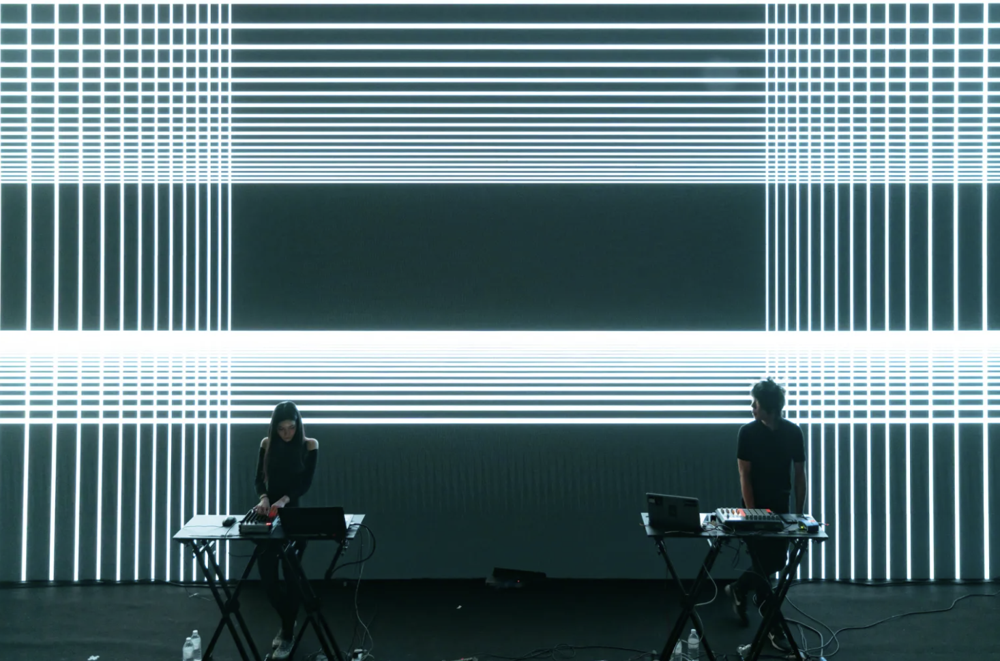

Blogs
Brainstorm Blog 1
One of the ideas that I had was to make an A.I generated an image of a man and a robot reaching with their hands to grab one another. It would reference the way that God and Adam were reaching out for each other in The Creation of Adam by Michaelangelo. I did actually make an art piece like this during my studio art one class in which I generated an image with Dall-E. The reason that I wanted to do this was because I wanted to highlight the imperfections that artificial intelligence is known for. Specifically, hands are notoriously bad at being drawn by artificial intelligence, so focusing on that subject matter was important for me and the piece, which is why I decided to reference The Creation of Adam. Another aspect that I really liked about that was how man was almost playing God and breathing life into a new species. I've always found the philosophy behind artificial intelligence and consciousness fascinating. Things like the Turing Test, self-awareness, etc... are all milestones that artificial consciousness should (and potentially already have) crossed. With this idea specifically, I think I'd like to generate more A.I images, of this man and machine reaching out to one another, to see how much more evolved artificial intelligence has come. Dall-E is unfortunately discontinued, but parties other than OpenAI have good generators and I want to still venture into that seeing how messed up the fingers can be with artificial intelligence. Below is the image that I made in the studio art one class.

Reading Blog 1 (Glitch Art Manifest)
I thought that the reading was super interesting and the text visually glitching out was a super fun take on the book medium. It made it much more fun and engaging to read than most of the other readings that I have in my other classes. In Menkman's essay, she argues that the art of glitch is partially recognizing that glitches were originally failures and unintentional. With this history, artists can use that as a metaphor to speak in any context and have their own take on failures, whether intentional or accidental. And with glitches specifically, it can especially speak in a technological or digital context. This essay really reminded me of the animated movie, Spider-Man: Across the Spider-Verse. In it, the protagonist Spider-Man, Miles Morales, is told that he was never supposed to be Spider-Man and that we was a mistake, an anomoly. This is a big theme in the movie, and it just so happens to be that when a character is in another universe, they "glitch". This is to indicate that they're not supposed to be in this alternate universe, and this glitch visual/plot device and theme of being a mistake is something I've never really put together before. In fact, I think we can follow the manifesto's logic one step further and see glitches as something positive, an oppurtunity to make something from failures. While I don't think that idea itself is in the Spider-Verse franchise yet, I could see it heading towards that way.

Brainstorm Blog 2
For my Blender project, I think I'd like to do something Halloween themed. I searched online and saw a tutorial for moths that are animated and have their wings flapping. I think it could be fairly easy to change this into a bat, but even starting the tutorial seems to be somewhat of a problem since I'm really struggling with using the bezier curve. Otherwise, I think it should be nice to have the bats flapping around the person using the TikTok filter. I'm unsure how this will transfer into Effect House and then onto TikTok, but I'm hoping it won't be too bad on the system. I don't really have any ideas for a second project yet, and I'm kind of just hoping that this first one will be impressive enough to fulfill the requirements, especially since I'm not super familiar with Blender as a whole. Maybe something with horns would do nicely, or a pumpkin jack o lantern could be fun. I don't have any deep meaning attached to this project, I just wanted to do something fun and with bats. It's just occured to me that the bats will likely be flying through the user's head, but that should be fine. I'm thinking with Effect House, I really liked the vignette effect and I think it could add an eerie Halloween vibe that I'm going for. I could even make the user's eyes red so that they become a vampire of sorts. I wonder if I can make the teeth extend and maybe change their hair to give them a more Dracula vibe. Maybe I can give them a cape as well. Below is a picture of the moth tutorial.

Reading Blog 2
Is Art Generated by Artificial Intelligence Real Art?I remember that when I was a little kid, maybe in middle school, I was on a car ride with my mom and my sister. And we were talking about robots (and adjacently artificial intelligence) and one thing that I remember so vividly thinking was that no matter how many manual labor jobs robots were going to take, it wasn’t possible for robots to create art since art requires creativity. That’s obviously not true. This article by the Harvard Gazette is centered around the question “If it wasn’t created by a human artist, is it still art?”. The article goes on to have different artists talk about their opinions on art in their specific medium and landscape within the art world, but in my opinion, most of the people kind of just dance around an answer. From what I gather, most of their responses are something along the lines of “I’m intrigued to see what artificial intelligence will become in the future.” One of the few standout comments that did catch my attention was from the musician. They specifically talked about jazz and its “in-the-moment” nature and how artificial intelligence fails to replicate the agency that humans have. They also talked about emotion in music and how A.I lacks in that aspect as well. I personally have never listened to artificial intelligence-made music, so I can’t quite comment on this, but I believe it. I also believe that in the future, artificial intelligence can make music on the spot and replicate the sporadic nature of jazz. They’ll also be able to create more soulful and emotional music as they evolve and become better and better. In summary, while most of the artists in the article are waiting to see what comes of artificial intelligence, I believe that it’s inevitable that A.I will evolve to create art that will become indistinguishable to that of a human. Whether people can call it art is up to themselves, but I think, yes, it is considered art, and the fact that A.I created the piece itself as part of the art piece.

Reading Blog 3
Digital Art is Redefining Creativity
I think the idea of digital visual art being at the forefront of the visual arts is interesting, true, and somewhat saddening. We live in the digital age where everything is conveniently at our fingertips. We get shipping from Amazon, we stream our music, and we get entertained for hours just by watching videos. It truly is a wonder to have access to everything. Of course, this means that we are consuming digital art the most. What counts as digital art is up for debate, but surely everyone considers something on the internet to be digital art. Whether it’s a touching episode of a show or a beautiful animation posted on YouTube, there is art on the internet, and we have an incredibly easy time accessing and consuming it. In some ways, it is amazing having the ability to share our artwork so easily with people across the world, but I feel as though we’re losing something by doing this. The fine arts seem to be overshadowed a bit by this. Taking this course, I feel as though it’s easily the most relevant to my actual day-to-day life and while I’m excited to take a wheel-throwing class next semester, I realize that class is mainly going to be for fun and not going to help me out in the real world.
I do think the different aspects you can experience in the arts are interesting. This article talks about interactivity with art and how that’s changing artwork into an experience. Most people experience digital artwork on their tiny phone screens or a monitor and while that can be the optimal and intended experience for some artists, I have to think that some art, even digital, is intended to be experienced in a certain way. Maybe in a theater with a giant screen and incredible sound quality. Maybe in VR, or maybe in person at an exhibition. I feel like there are so many ways that art and intention from the creator get lost when digital art gets put onto the internet.
